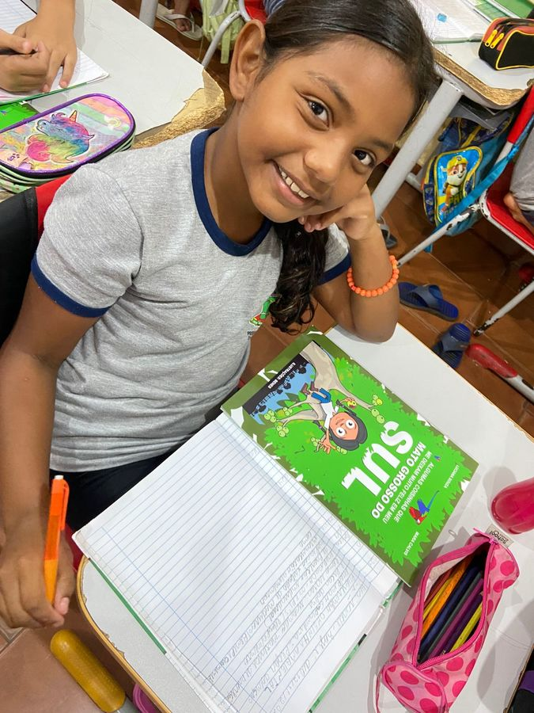

Projeto de Educação Ambiental promove leitura e sustentabilidade nas escolas municipais
Iniciativa mobilizou mais de 300 alunos em ações de sustentabilidade e conscientização ambiental
Após meses de aprendizado prático e atividades interativas, um projeto inovador de educação ambiental foi concluído com sucesso em duas escolas da Rede Municipal de Nova Andradina. A iniciativa, que aliou a prática da coleta seletiva à leitura de livros sobre sustentabilidade, impactou diretamente mais de 300 estudantes das escolas municipais Arco-Íris e Brincando de Aprender, despertando a consciência ecológica e o protagonismo dos jovens em questões ambientais.
O projeto foi desenvolvido em duas frentes principais: gincanas de coleta seletiva, que estimularam a arrecadação de materiais recicláveis como papel, plástico, metal e vidro, e a inclusão de literatura ambiental no currículo escolar. Os professores utilizaram livros temáticos para aprofundar o aprendizado, enquanto os alunos colocavam em prática os conceitos aprendidos em sala.
“Foi gratificante ver os alunos conectando as leituras com ações concretas. A leitura os ajudou a compreender como nossas escolhas afetam o meio ambiente”, afirmou Minervina Monteiro de Carvalho, diretora da Escola Brincando de Aprender.
Durante o período de execução, os estudantes coletaram cerca de meia tonelada de materiais recicláveis, que foram destinados a cooperativas locais, fortalecendo a economia circular e beneficiando famílias que dependem da reciclagem. A iniciativa também promoveu debates sobre preservação ambiental, consumo consciente e reciclagem, além de atividades artísticas e científicas, como a criação de maquetes com materiais reutilizados.

Marcileide Picoli, diretora da Escola Municipal Arco-Íris, destacou o impacto do projeto. “A integração entre leitura e prática foi transformadora. Os alunos não apenas aprenderam sobre reciclagem, mas entenderam seu papel como agentes de mudança, levando essa consciência para suas famílias e a comunidade”, sublinhou.
O engajamento dos alunos também foi significativo. Muitos relataram que passaram a adotar hábitos mais sustentáveis em casa. “Li no livro que pequenas ações fazem a diferença. Agora, minha família separa o lixo e sei que estamos ajudando o meio ambiente”, compartilhou a aluna Letícia Maziero Oliveira Moreira.
Com o sucesso da iniciativa, a Secretaria Municipal de Educação, Cultura e Esporte já planeja ampliar o projeto no próximo ano, abordando novos temas como reaproveitamento de resíduos orgânicos e economia de água.
“A combinação entre leitura e práticas sustentáveis mostra que a educação ambiental tem o poder de transformar comportamentos individuais e inspirar mudanças significativas na sociedade”, ressaltou a secretária Giuliana Masculi.
